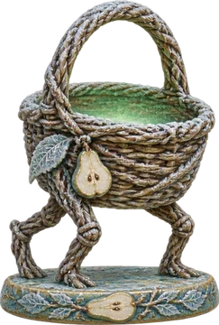
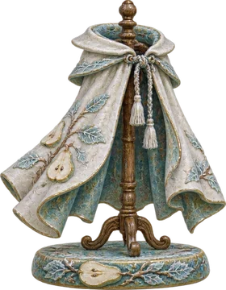

Сад украденной зимы
Карты и фигурки ведущего
Игровой комплект
3 игрока · 4 игрока · 5 игроков · 6 игроков · 7 игроков
Карта кампании

Поля боя


Герои


Персонажи ведущего


Противники
 Холодный отблеск 4Холодный отблеск 5Холодный отблеск 2Холодный отблеск 1Холодный отблеск 3
Холодный отблеск 4Холодный отблеск 5Холодный отблеск 2Холодный отблеск 1Холодный отблеск 3

Плетёный сторож 5Плетёный сторож 2Плетёный сторож 3Плетёный сторож 4Плетёный сторож 1

Пустой распорядитель 5Пустой распорядитель 3Пустой распорядитель 4Пустой распорядитель 1Пустой распорядитель 2